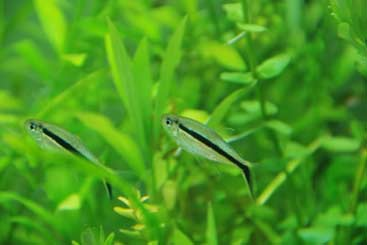

Choosing the right fish for your aquarium can be a demanding and worrying prospect. There are different types, grades, prices, sizes, colour, aggression, feeding, water qualities etc. The list goes on and on.

Before you choose something, the major factor that we must look at is inevitability. Inevitably the fish you purchase will grow, is this what you want? Do you want extremely large fish? Do you want your fish to stay smaller? Do you want a schooling fish? Planning out what you are going to purchase and how many is the best way to a more aesthetic aquarium.
If you want to house larger and more aggressive fish it is better to have just that type by itself, or only with other large and aggressive species. If you choose a schooling fish, a species tank is also a good option, they will most likely stick together, giving the desired effect.
If you want a community tank make sure you research which fish will go with which and what water conditions each needs. There is no use having a school of discus which need a very specific pH and then some cichlids who need a much higher pH as one will suffer while the other thrives.
You need to choose suitable tank mates. Look at the skill level for each fish as well. Some fish are more susceptible to disease and mutation, making them a higher calibre of skill refinement. Some fish require very special care that some aquarists are not prepared to give.
If you choose a larger more aggressive fish, beware of the implications. You will need more water changes and you will most probably need to supply it with an assortment of live foods.